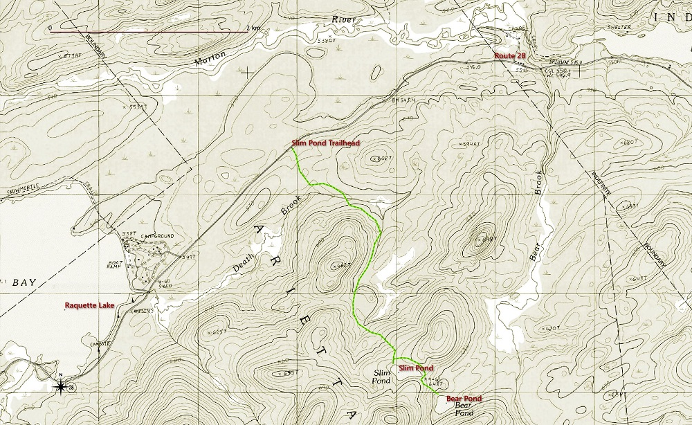

An easy 3.6 mile round trip hike. The trailhead is accessed from Route 28 between Blue Mountain Lake and Raquette Lake
| Directions | The Slim Pond trailhead is accessed from Route 28 between Blue Mountain Lake and Raquette Lake. From Blue Mountain Lake head south on Route 28 towards Raquette Lake. The parking area is on the left, approximately seven miles from Blue Mountain Lake. If you reach the Golden Beach Campground entrance, you've gone too far. There are signs marking the trailhead and off-road parking for several cars. |
| Difficulty | Plan on two to three hours for the easy 3.6 miles (round trip) to Slim Pond. No formal trail goes to Bear Pond, but a path marked with pink surveyor tape leads there. The Bear Pond extension adds one and half miles (round trip). |
| Family-Friendly | Yes, the trail to Slim Pond is mostly level with just a few wet stretches to slow your progress. The path to Bear Pond is not formally marked and is more challenging. If you plan to continue to Bear Pond you'll want to be comfortable with off-trail route finding. |
| Winter | The trail to Slim Pond is well suited to either cross-country skiing or snowshoeing. The path to Bear Pond is good for snowshoeing but might be too rough for skiing. |
| One Thing to Know | Stretches of the first half mile this trail pass through a Spruce Flat. This forest community type is dominated by Red Spruce. |
| DEC Website Page | Blue Ridge Wilderness Area |
| Photo Gallery | Photo Gallery on Flickr |
Before the completion of Route 28 highway rebuild in 2020, the Slim Pond trailhead was hard to find. But signs have now been placed along the highway and the parking pull-off was formalized. The trail is well marked and there are bridges over a couple of streams and wet areas. Both ponds are in the Blue Ridge Wilderness area.
Slim Pond - Bear Pond Trail Map
Slim Pond. December 2020
Bear Pond lies about one half mile beyond Slim Pond. To continue to Bear Pond walk back along the trail for about 200 yards and look for a bright pink tape marking the start of the path to Bear Pond. As of the winter of 2020 the tapes lead all the way to Bear Pond. This path is informal, and rough in places, but it is easy if you are used to off-trail hiking. Bear Pond is attractive and the path passes a nice picnic spot at the far end of Slim Pond.